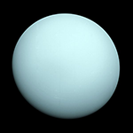

Уран
 Уран стал первой планетой, обнаруженной в Новое время и при помощи телескопа. Об открытии Урана Уильям Гершель объявил 13 марта 1781 года, тем самым впервые со времён античности расширив границы Солнечной системы в глазах человека. Несмотря на то, что порой Уран различим невооружённым глазом, более ранние наблюдатели не догадывались, что это планета, из-за его тусклости и медленного движения.
{kind=link}
В отличие от газовых гигантов — Сатурна и Юпитера, состоящих в основном из водорода и гелия, в недрах Урана и схожего с ним Нептуна отсутствует металлический водород, но зато много льда в его высокотемпературных модификациях. По этой причине специалисты выделили эти две планеты в отдельную категорию «ледяных гигантов». Основу атмосферы Урана составляют водород и гелий. Кроме того, в ней обнаружены следы метана и других углеводородов, а также облака изо льда, твёрдого аммиака и водорода. Это самая холодная планетарная атмосфера Солнечной системы с минимальной температурой в 49 К (224 °C). Полагают, что Уран имеет сложную слоистую структуру облаков, где вода составляет нижний слой, а метан — верхний. В отличие от Нептуна, недра Урана состоят в основном изо льдов и горных пород.
Так же, как и у других газовых гигантов Солнечной системы, у Урана имеется система колец и магнитосфера, а кроме того, 27 спутников. Ориентация Урана в пространстве отличается от остальных планет Солнечной системы — его ось вращения лежит как бы «на боку» относительно плоскости обращения этой планеты вокруг Солнца. Вследствие этого планета бывает обращена к Солнцу попеременно то северным полюсом, то южным, то экватором, то средними широтами.
{kind=link}
В 1986 году американский космический аппарат «Вояджер-2» передал на Землю снимки Урана с близкого расстояния. На них видна «невыразительная» в видимом спектре планета без облачных полос и атмосферных штормов, характерных для других планет-гигантов. Однако в настоящее время наземными наблюдениями удалось различить признаки сезонных изменений и увеличения погодной активности на планете, вызванных приближением Урана к точке своего равноденствия. Скорость ветров на Уране может достигать 250 м/с (900 км/ч).